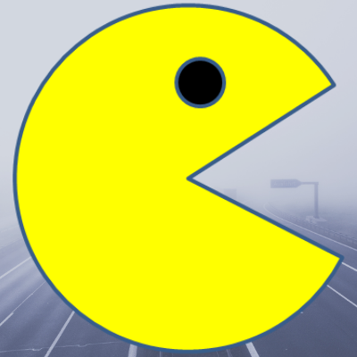

Pacman Exercise
An exercise to keep the Pacman moving along the x-axis and reverse trajectory once the Pacman hits the edge of the screen on the x-axis.
View Webpage View GitHub Repo
Eyes Exercise
An exercise to use JavaScript and CSS to create a dynamic web page with two eyes. Both eyes will follow the mouse movement simultaneously.
View Webpage View GitHub Repo
Real Time Bus Tracker
An exercise to use Javascript, HTML, CSS and API to create map, map markers and feed real-time information to show the locations of the buses.
View Webpage View GitHub Repo